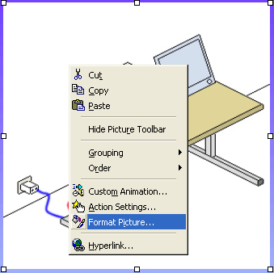
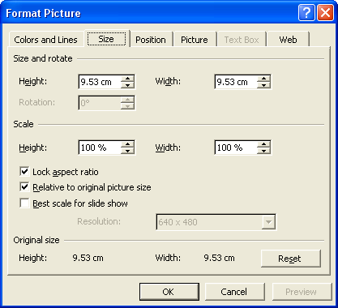
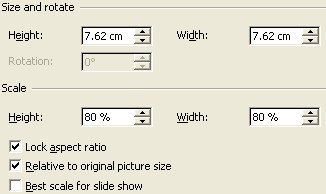
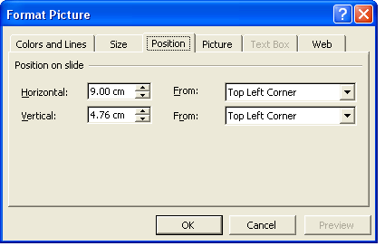
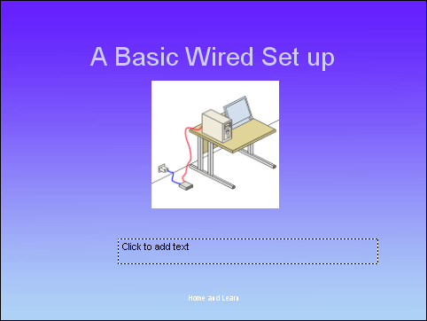
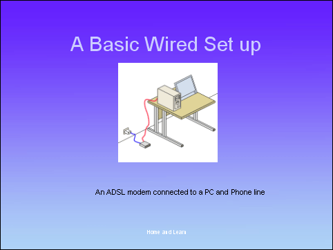
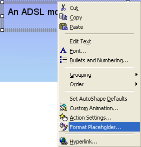
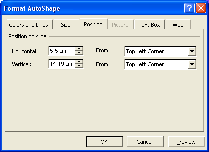
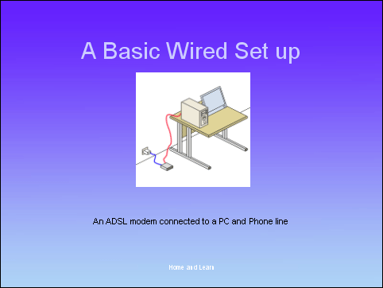

Free
powerpoint
Tutorials
|
Free
powerpoint
Tutorials
|
|
 home home |
Stay at Home and Learn | ||||
How to Resize an Image in PowerPoint |
|||||
|
Part 1, 2, 3, 4, 5, 6, 7, 8, 9, 10, 11
Select the image you inserted by clicking on it, and you'll see the white sizing handles around the edges. You can hold your mouse over any of these squares (or circles in PowerPoint 2003), and the pointer will change shape. Hold down the left mouse button and drag to a new size. There is a better way, though. Right click on the image, and you'll see a context menu appear:  Select Format Picture from the menu. When the Format Picture dialogue box appears, select the Size tab:  Locate the Scale section halfway down, and change the Height to 80%. When you change the Height, you'll see the other numbers change automatically. (If you don't, make sure you have a tick in the box next to Lock aspect ratio.)  When the numbers are the same as in the image above, click the Preview button at the bottom. Then click the Position tab at the top.  You can leave the Vertical position. But set the Horizontal position to 9.00 cm. Click OK and your slide three should look like this:  The next thing to do is to add the text in the text box at the bottom. From our Slide Three Outline notes, the text is this: An ADSL modem connected to a PC and Phone line Click inside of the text box at the bottom and type that line. If you then click outside the text box, you'll see that the text is not quite aligned correctly:  Our text is too far to the right, and needs dragging back a little. You can reposition the text box in the same way that you repositioned the image. Click back inside the textbox, and then right-click anywhere on the
shaded edges. You should see the following context menu appear:  Again, you'll see the Format dialogue box appear. Click on the Position tab:  The Vertical position (up and down) can stay as it is. But change the Horizontal to 5.5cm. To see what the change will look like, click the Preview button at the bottom. Aim to centre the text with the Image and the Title at the top. Click OK when you're happy with the position:  Add the notes in the Notes area at the bottom of PowerPoint, and you're done with slide three! Press F5 on your keyboard to view your presentation so far.
Slides 4 to 7 Slides 4 to 7 can be completed in exactly the same was as for slide 3. Consult the Slide Outline to see what to put on each slide. The images for each slide are these: Slide 4 - 2adslSignalPCPhone.gif But you're not doing anything different here than what you did for slide 3. (Note that the rest of the images are GIF images rather than JPEGs. This is because they are animated images.)
Slide 8 For slide 8, type the text from the Slide Outline, then resize and reposition your text box When you have finished slides 4 to 8, we can move on to PowerPoint
Slide Transitions.
|
||||